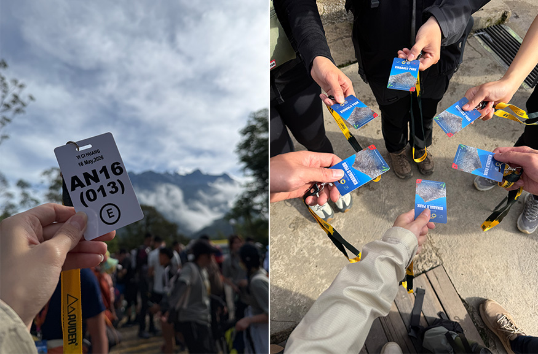
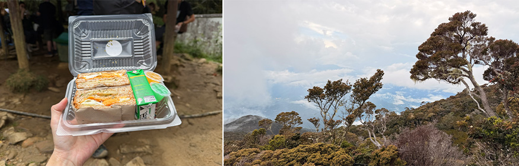
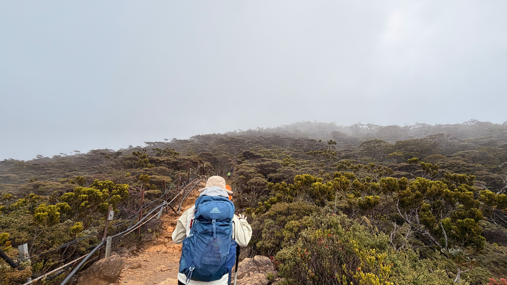
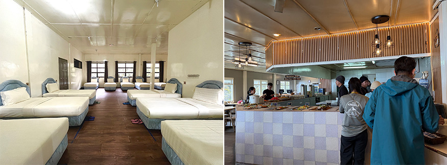
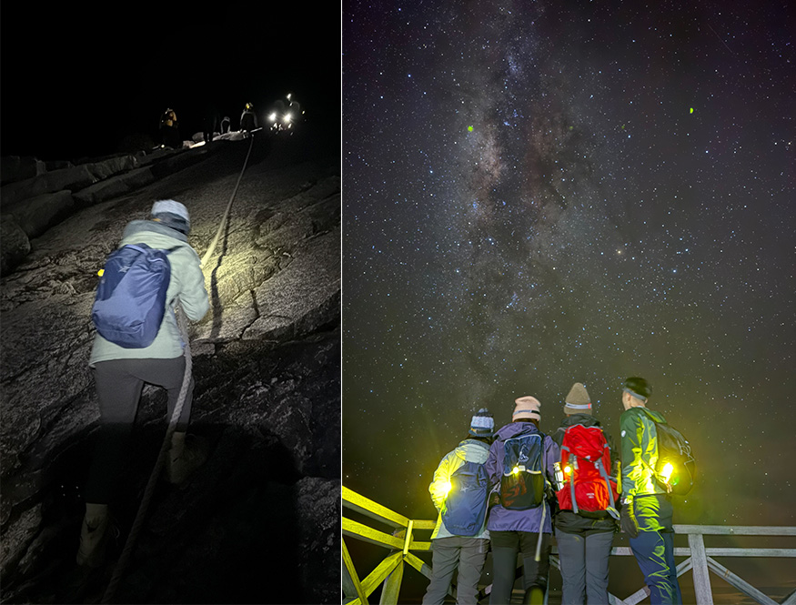
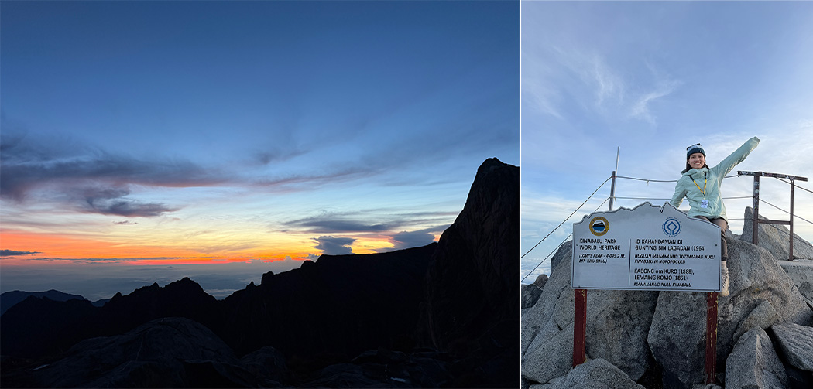
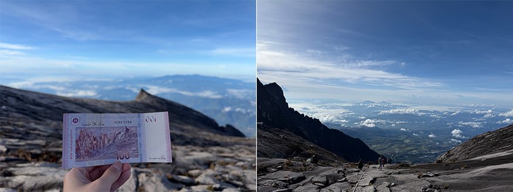
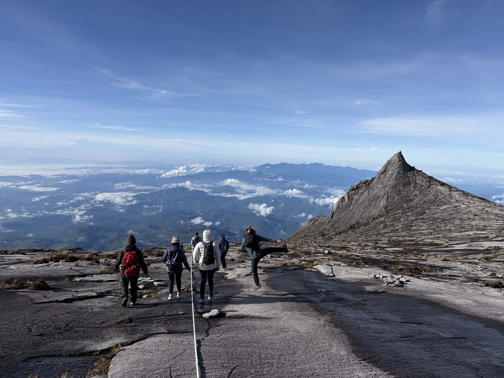

第一次認識神山，是在 YouTuber DoDoMen 的影片裡。當時看到主角 Ian 邀請陌生人一起前往神山，看著他們一步步往上走，臉上藏不住疲憊，隔著螢幕的我都忍不住覺得好累。我腦中只有一個念頭：「太瘋狂了吧！」也覺得自己這輩子絕對不可能做這件事，根本是自虐。
沒想到，還是有被打臉的一天🙂
這個念頭，是從登頂玉山之後開始萌生的。站在玉山主峰的那一刻的成就和感動，讓我下定決定想挑戰—完登東亞三山（註：台灣玉山、日本富士山以及馬來西亞神山）。
因為是第一次到國外爬山，我花了不少時間做功課。從台灣出發的登山團費大約 5-6 萬元（不含機票），因為價格較高，一番評估後，最後選擇了馬來西亞當地的專業旅行社─峰狂山旅。去年七月預訂了早鳥方案，團費 2,299 馬幣（約新台幣 1.8 萬元）。今年五月，我便正式啟程，出發前往東馬的沙巴州，展開我的神山之旅。
抵達沙巴時已是深夜，隔天我們搭車前往神山山腳，入住山腳下的民宿— Happy Garden。只是這裡一點也不 Happy。這裡的網路收訊差到不可思議，隊友們甚至得走到戶外走廊才能打蘑菇（註：近期熱門手遊《皮克敏》中的任務之一），不過換個角度想，對隔天要爬山的人來說，或許也是件好事，沒有手機的誘惑，也都能早點休息。
隔天一早，我們在登山口拍完照，遠遠望著今天即將走上的那座山，心裡除了期待，也藏著一點緊張。
 |
| （每位山友都會配發一張識別證，從入山、通過檢查站到山屋用餐，都需要隨身攜帶並出示） |
早上九點開始起登，第一天的路程約 6 公里，爬升 1,500 公尺，大多是一路陡上的階梯。走到 4 公里處，有一座小涼亭，也是當天午餐的休息點。我們簡單吃點東西、補充體力後繼續上路。最後兩公里明顯比前面更有挑戰一些，每一階的落差也變得更大，最後約下午兩點五十分左右抵達山屋。
 |
| （嚮導幫我們準備的午餐） （沿途的美樹） |
 |
第一天的路程體感上不會太難，只要掌握好呼吸，慢慢地一步一步前進，就可以順利抵達，更像是在慢慢適應這座山的節奏，讓身體準備好迎接隔天真正的挑戰。
一到山屋，便迫不及待地參觀傳說中五星級的山屋，顛覆了我對高山住宿的想像。不僅有舒適的床和枕頭，床頭還設有充電插座，相較於台灣山屋的大通鋪和睡袋，這裡簡直是山屋界的 Pro Max 版，晚餐更是豐盛的 Buffet，瞬間療癒了一整天的疲憊。
 |
| （五星級山屋 & 晚餐✨） |
凌晨一點，我們起床整理行李；一點半開始吃早餐。兩點多，戴起頭燈，再次踏上山徑，準備挑戰最後 2.72 公里、爬升約 800 公尺的攻頂路段，也是整趟旅程最硬的一段🙂
夜裡的山很安靜，只剩下頭燈照亮眼前的一小段路。抬頭是滿天銀河；回頭是山下點點燈火；而眼前則是彷彿沒有盡頭的陡坡。
 |
| （星空很美，但心情不美） |
走了一公里，大約四點十五分，我們抵達 Sayat-Sayat 檢查站，比嚮導預估的時間快了一些。原本以為已經走了很遠，沒想到居然才前進了 1 公里，而後面還有 1.72 公里。天色依然漆黑，坡度越來越陡，身旁是一望無際的岩壁，忍不住開始懷疑自己能不能在日出前走到終點，甚至有點想哭。但看到隊友抵達檢查站的第一時間是拿出手機打蘑菇跟抽山上限定的明信片，畫面可愛地讓我忍不住會心一笑，原本累到懷疑人生的心情也跟著輕鬆了一點。
感謝一路上都有隊友們陪著我，不斷地跟我說：「快到了。」這大概是每個爬山人最常說的善意謊言了吧！就這樣一邊互相鼓勵，一邊慢慢往前走，天色漸漸亮了，第一道陽光灑落在整片花崗岩上，我們終於走到了頂點——海拔 4,095 公尺，Mount Kinabalu。
 |
| （我們在前往山頂的路上，迎來了日出） |
我們在山頂拍了一百萬張照片，才心滿意足地慢悠悠開始下山。回程一路欣賞著風景，也順道在山上郵局寄出了明信片，郵資僅要 1 塊馬幣，就能帶著這份來自神山的心意，寄往世界各地。
 |
| （馬幣 100 元與神山的經典合影） （下山時才看清摸黑爬上來的陡坡） |
回到山屋後吃個早餐，收拾完行李便準備下山。沒想到才走沒多久，天空就開始飄起細雨，接著一路下成中大雨。我們趕緊套上雨褲、幫背包穿上雨套，最後 6 公里幾乎都在雨中度過。山徑上的泥土混著雨水，一開始像泰式奶茶，後來慢慢變成美祿的顏色，倒也成了這趟旅程另一個有趣的記憶。
當然，淋了一整路雨的代價是—隔天晚上就發燒了😊
幸好隊友有帶退燒藥，不然人在國外生病，真的不太好受。
回首這趟旅程，我最感謝的是那個願意出發的自己。如果當初因為害怕而停留在「不可能」的念頭裡，我永遠不會知道，原來那些曾經以為遙不可及的地方，只要願意踏出第一步，也能一步一步走到。
真正困住我的往往不是那座山，而是還沒開始之前的自己。
這趟旅程是送給自己的一份禮物，也是一份紀念。願未來的自己，依然保持對世界的好奇、對夢想的行動力，繼續自由地追逐熱愛，完成一個又一個屬於自己的小目標，讓人生不虛此行。
 |
| （最後，也要感謝我最可愛和可靠的隊友們 ❤️） |